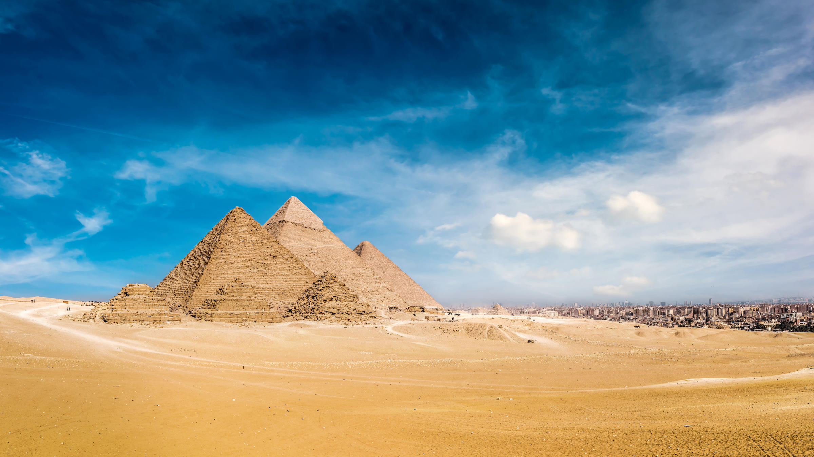
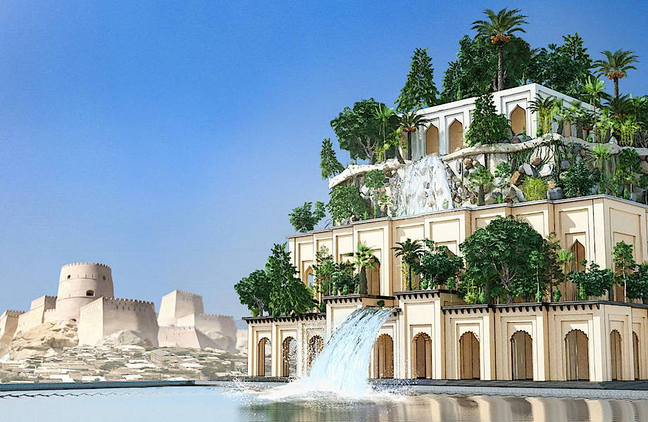
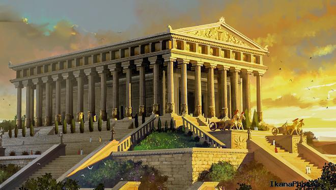

- Внутренние отступы - padding
- Внешние отступы - margin
- Центрирование блока
Семь чудес света, или Семь чудес Древнего Мира (др.-греч. ἑπτὰ θεάματα τῆς οἰκουμένης) — список самых прославленных сооружений архитектуры. Составление списка самых знаменитых поэтов, философов, полководцев, великих царей, как и памятников архитектуры и искусства — традиционный «малый» жанр греческой эллинистической поэзии и своего рода упражнение в риторике. Сам выбор числа освящён древнейшими представлениями о его полноте, законченности и совершенстве, число 7 считалось священным числом бога Аполлона (Семеро против Фив, Семь мудрецов и т. п.). Подобно сборникам высказываний знаменитых мудрецов, собраниям анекдотов и рассказам о диковинах, сочинения о Семи чудесах света были популярны в античную эпоху и включали в себя описания самых грандиозных, самых великолепных или в техническом смысле самых поразительных построек и памятников искусства. Вот почему их называли чудесами, в то время как в списке отсутствуют многие подлинные шедевры древней архитектуры и искусства — Акрополь в Афинах с творением Фидия — статуей Афины, Парфенон, прославленная статуя Афродиты Книдской работы Праксителя и т. д.
Упоминания о Семи чудесах появляются в сочинениях греческих авторов, начиная с эпохи эллинизма. В тексте одного египетского папируса (текст назван Дильсом Laterculi Alexandrini (P. Berol. 13044); это папирус, датируемый I в. до н. э.), представлявшего собой своего рода учебное пособие, упоминаются имена знаменитых законодателей, живописцев, скульпторов, архитекторов, изобретателей, далее — самые большие острова, горы и реки и, наконец, семь чудес света. «Отбор» чудес происходил постепенно, и одни чудеса сменяли другие.
Пирамида Хеопса
Отрицательный margin
Пирами́да Хеопса (араб. هرم خوفو), Великая пирамида Гизы — крупнейшая из египетских пирамид, памятник архитектурного искусства Древнего Египта; первое и единственное из «Семи чудес света», сохранившееся до наших дней, и самое древнее из них: её возраст оценивается примерно в 4500 лет.
Расположена на плато Гиза в окрестностях египетской столицы и дельты Нила, на его левом берегу; самая северная из трёх больших пирамид плато, носящих имена трёх фараонов Древнего царства из четвёртой династии, предполагаемых заказчиков строительства, — Хеопса (Хуфу), Хефрена (Хафры) и Микерина (Менкауры). Три пирамиды — со сторонами точно ориентированными по четырём сторонам света[1] — были сооружены в окрестностях городов Мемфиса (столицы Древнего царства) и Гелиополя за тысячелетия до основания Каира.
Это одноярусная пирамида с гладкими сторонами и квадратным основанием, облицовка с которой была снята при султане Баркуке в 1395 году, а вершина представляет платформу в 10 м длины и ширины[3]. Коридор, ведущий к северу, составляет с горизонтом угол в 30° и идёт почти параллельно земной оси[4]. На протяжении более трёх тысячелетий (до возведения собора в Линкольне, Англия, ок. 1300 года) пирамида была самой высокой постройкой на Земле. С 1979 года, как и многие другие пирамиды комплекса «Мемфис и его некрополи — район пирамид от Гизы до Дахшура», является частью Всемирного наследия ЮНЕСКО.
Архитектором Великой пирамиды считается Хемиун, визирь и племянник Хеопса. Он также носил титул «Управляющий всеми стройками фараона». Предполагается, что строительство, продолжавшееся двадцать лет (время правления Хеопса), закончилось около 2540 года до н. э.
Существующие методы датирования времени начала строительства пирамиды делятся на исторические, астрономические и радиоуглеродные. В Египте официально установлена (2009) и празднуется дата начала строительства пирамиды Хеопса — 23 августа 2560 года до н. э. Такая дата получена с использованием астрономического метода Кейт Спенс (университет в Кембридже[6]). Однако этот метод и полученные с его помощью даты подвергались критике многих египтологов. Даты согласно другим методам датирования: 2720 до н. э. (Стивен Хак, университет Небраска), 2577 до н. э. (Джуан Антонио Бельмонте, университет астрофизики в Канарисе) и 2708 до н. э. (Поллукс, университет Баумана). Радиоуглеродный метод даёт диапазон от 2680 до н. э. до 2850 до н. э. Поэтому установленному «дню рождения» пирамиды нет никаких серьёзных подтверждений, так как египтологи не могут сойтись в том, в каком именно году началось строительство.
В 2020 году в Шотландии были обнаружены считавшиеся утраченными образцы кедровой дощечки, извлеченной из до этого запечатанной вентшахты Камеры царицы инженером Диксоном, что с новой силой подняло вопросы датировки строительства пирамиды Хеопса, так как их радиоуглеродный анализ дал даты порядка 3341—3094 до н. э., то есть почти на 1200 height="600"лет старше официально принятой цифры.
Висячие сады Семирамиды
Прижатый объект справа
Вися́чие сады́ Семирами́ды — одно из Семи чудес античного мира, которое представляло собой инженерное сооружение в Вавилоне с каскадом многоуровневых садов, где росли многочисленные породы деревьев, кустарников и виноградных лоз, производившее впечатление большой зелёной горы. Единственное из Семи чудес, местонахождение которого окончательно не установлено и, более того, подвергается сомнению сам факт его существования, поскольку не сохранилось никаких вавилонских текстов, в которых упоминаются эти сады, описания садов имеются лишь у поздних древнегреческих и римских авторов, а археологические раскопки в районе предполагаемого местонахождения садов также не дали результатов.
- Применение для объекта свойства CSS max-height, overflow: visible;
- Применение для объекта свойства CSS overflow: hidden;
- Применение для объекта свойства CSS overflow: scroll;
- Применение для объекта свойства CSS overflow: auto;
Статуя Зевса в Олимпии
Статуя Зевса в Олимпии — единственное из Семи чудес света, которое располагалось в материковой части Европы (в городе Олимпия). Статуя Зевса в Олимпии — третье чудо света Древнего мира. Была воздвигнута в V веке до нашей эры. Она была изготовлена из золота, дерева и слоновой кости, в так называемой хрисоэлефантинной технике. Мраморный храм Зевса превосходил по размерам все существовавшие на тот момент храмы.
Весь храм, включая крышу, был построен из мрамора. Массивную крышу здания размером 27 на 64 м поддерживали 34 колонны, выполненные из известняка. Каждая была высотой в 10,6 метра и толщиной более 2 метров. Статую Зевса возвёл Фидий. На мраморных фронтонах и наружных стенах храма располагались плиты с изображениями 12 подвигов Геракла . Бронзовые двери высотой в 10 метров открывали вход в культовое помещение храма.
В V веке до н. э. граждане Олимпии решили построить храм Зевса. Величественное здание возводилось между 466 и 456 годами до н. э. Оно было сооружено из огромных каменных блоков. В течение нескольких лет после окончания строительства в храме не было достойной статуи Зевса, хотя довольно скоро решили, что она необходима. В качестве создателя статуи был избран знаменитый афинский скульптор Фидий.
Храм Артемиды Эфесской
Храм Артеми́ды в Эфе́се, или Артемисион (др.-греч. Ἀρτεμίσιον; тур. Artemis Tapınağı), известный также как Храм Диа́ны — одно из Семи чудес античного мира, греческий храм, посвящённый местному культу богини Артемиды[⇨] (соответствует римской богине Диане). Находился в греческом городе Эфесе на побережье Малой Азии, в настоящее время — около города Сельчук на юге провинции Измир, Турция.
Храм пережил несколько жизненных циклов. Самая ранняя версия храма (теменос) датируется ещё бронзовым веком. Александрийский учёный и поэт Каллимах в своём «Гимне Артемиде» приписывал его сооружение амазонкам. В VII веке до нашей эры этот храм был разрушен наводнением[⇨]. Затем около 550 года до н. э. началась реконструкция, а фактически — сооружение нового, куда большего по размерам храма, которое вёл знаменитый зодчий Херсифрон вместе с сыном Метагеном[⇨]. Строительство этого храма длилось около двух веков и было завершено около 380 года до н. э. архитекторами Деметрием и Пеонием[2]. В 356 году до н. э. храм был сожжён Геростратом, но через некоторое время восстановлен. Последняя версия храма[⇨], на восстановление которого выделил средства Александр Македонский, описана в труде Антипатра Сидонского[en] «Семь чудес света»:
Мавзолей в Галикарнасе
Галикарнасский мавзолей (греч. Μαυσωλείο της Αλικαρνασσού; тур. Halikarnas Mozolesi) — гробница карийского сатрапа Мавсола (греч. Μαύσωλος), сооружённая в середине IV века до н. э. по приказу его супруги Артемисии II в Галикарнасе (ныне — Бодрум, Турция), одно из Семи античных чудес света. Проект был разработан греческими архитекторами Сатиросом[en] и Пифеем Приенским. Проект гробницы несёт черты архитектуры некоторых гробниц соседнего царства — Ликии, завоёванного Мавсолом около 360 г. до н. э., в частности, монумента Нереид.
Мавзолей был приблизительно 45 м в высоту, четыре стороны здания были украшены скульптурными рельефами, каждый из которых был создан одним из четырёх греческих скульпторов: Леохаром, Бриаксисом, Скопасом Паросским и Тимотеем. Законченное здание мавзолея отличалось таким великолепием, что Антипатр Сидонский причислил его к числу семи чудес античности. Мавзолей был разрушен к концу XV века рядом землетрясений, и входит в число трёх наиболее долговечных из Семи чудес (наряду с сохранившейся до настоящего времени пирамидой Хеопса и Александрийским маяком).
Слово «мавзолей» благодаря гробнице Мавсола вошло во многие языки мира и стало нарицательным. В русский язык оно вошло из греческого, вероятно, через немецкий или французский.
Колосс Родосский
Коло́сс Родо́сский (др.-греч. Κολοσσὸς Ῥόδιος, лат. Colossus Rhodius) — гигантская статуя древнегреческого бога Солнца — Гелиоса, которая стояла в портовом городе Родосе, расположенном на одноимённом острове в Эгейском море, в Греции. Одно из «Семи чудес света». Произведение знаменитой родосской школы скульптуры. Простоял чуть более полувека, пока не был разрушен землетрясением.
Коло́сс Родо́сский (др.-греч. Κολοσσὸς Ῥόδιος, лат. Colossus Rhodius) — гигантская статуя древнегреческого бога Солнца — Гелиоса, которая стояла в портовом городе Родосе, расположенном на одноимённом острове в Эгейском море, в Греции. Одно из «Семи чудес света». Произведение знаменитой родосской школы скульптуры. Простоял чуть более полувека, пока не был разрушен землетрясением.
После распада державы Александра Македонского на Родосе закрепился Птолемей. После его утверждения в Египте он заключил с Родосом союз, контролирующий торговлю в восточном Средиземноморье. В 305 году до н. э. сын диадоха Антигона Одноглазого, Деметрий Македонский, высадился на Родосе с сорокатысячным войском. Продержав главный город острова в осаде целый год, несмотря на сооружение множества осадных орудий, он был вынужден отступить. Около 294—282 годов до н. э. в честь героически выдержанной родосцами осады, жители города решили возвести статую.
Для этого граждане Родоса постановили продать брошенные врагом осадные орудия и на вырученные средства построить статую почитаемого ими бога Солнца Гелиоса, чтобы отблагодарить его за заступничество. Гелиос был не просто особо почитаемым божеством на острове — по легенде он был самим его создателем: не имея места, ему посвящённого, солнечный бог вынес остров на своих руках из морской глубины.
Александрийский маяк
Применение для объекта SPAN свойства CSS padding
Александри́йский маяк (известен также как Фа́росский маяк, др.-греч. ὁ Φάρος τῆς Ἀλεξανδρείας, ho pʰá.ros teːs a.lek.sandréːaːs) — маяк на острове Фарос около египетского города Александрии, одно из семи чудес света. Был построен во время правления Птолемея II Филадельфа (280—247 до н. э.), высота маяка составляла порядка 120—150 метров, на протяжении многих веков это было одним из самых высоких искусственных сооружений в мире.
Применение для объекта SPAN свойства CSS margin
Александрийский маяк входил в число трёх из Семи чудес древности, сохранявшихся дольше всего (наряду с сохранившейся до настоящего времени пирамидой Хеопса и Галикарнасским мавзолеем, просуществовавшим в разрушенном виде до 1494 года). Маяк был сильно поврежден в результате землетрясений в период 796—1323 годов нашей эры, остатки его конструкции частично сохранялись до 1480 года, после чего были использованы для строительства цитадели Кайт-Бей на этом месте.
Применение для объекта IMG свойства CSS padding, margin



Применение свойства CSS display
Александрийский маяк
В 332 году до н. э. Александр Македонский основал город Александрия. Место для города полководец выбирал чрезвычайно тщательно, поскольку планировал построить в этом регионе порт, который являлся бы важным торговым центром на пересечении как водных, так и наземных путей трёх частей света — Африки, Европы и Азии. Местонахождение этого порта должно было быть удобным как для кораблей, прибывающих из Средиземного моря, так и для кораблей, осуществлявших навигацию по Нилу. Поэтому в конечном счёте Александр Македонский выбрал место не непосредственно в дельте Нила, а на 20 миль южнее, на перешейке напротив острова Фарос. Для создания двух гаваней Александрия и Фарос были соединены молом длиной более 1200 метров, который назывался Гептастадион[en] (буквально «семь стадий»: стадий — греческая единица длины, приблизительно 180 м)[6]. Гавань к востоку от мола стала Большой Гаванью, в настоящее время представляет собой открытую бухту; к западу от мола находился порт Евностос, который теперь значительно расширен, формируя современную гавань. В настоящее время от острова Фарос сохранился лишь небольшой участок[7], а место, где находился маяк, расположено в его восточной точке.

Дополнительное задание
Привет!
Привет!
Привет!
Очевидно, что для удобства мореплавания в новом порту нужен был маяк, но строительство его началось уже после смерти Александра Македонского. Основатель династии Птолемеев, Птолемей I Сотер в 305 году до н. э. провозгласил себя царём Египта и провёл ряд успешных военных кампаний: завоевал Сирию, поработил евреев и увёл их в Египет, в 295—294 годах до н. э. вернул себе Кипр.
Очевидно, что для удобства мореплавания в новом порту нужен был маяк, но строительство его началось уже после смерти Александра Македонского. Основатель династии Птолемеев, Птолемей I Сотер в 305 году до н. э. провозгласил себя царём Египта и провёл ряд успешных военных кампаний: завоевал Сирию, поработил евреев и увёл их в Египет, в 295—294 годах до н. э. вернул себе Кипр.
Очевидно, что для удобства мореплавания в новом порту нужен был маяк, но строительство его началось уже после смерти Александра Македонского. Основатель династии Птолемеев, Птолемей I Сотер в 305 году до н. э. провозгласил себя царём Египта и провёл ряд успешных военных кампаний: завоевал Сирию, поработил евреев и увёл их в Египет, в 295—294 годах до н. э. вернул себе Кипр.
Ссылка
Это позволило Птолемею начать строительство маяка, требовавшее огромных ресурсов. Точная дата начала строительства неизвестна, различные источники называют даты в промежутке 299—285 гг. до н. э. Строительство было завершено уже во время правления его сына, Птолемея II Филадельфа. Сооружение маяка заняло двенадцать лет и обошлось казне примерно в 800 талантов (около 23 тонн) серебра. Это составляло примерно десятую часть размера казны Египта при вступлении Птолемея I на трон. (Для сравнения, сооружение Парфенона на афинском Акрополе оценивается в 469 талантов серебра).
Это позволило Птолемею начать строительство маяка, требовавшее огромных ресурсов. Точная дата начала строительства неизвестна, различные источники называют даты в промежутке 299—285 гг. до н. э. Строительство было завершено уже во время правления его сына, Птолемея II Филадельфа. Сооружение маяка заняло двенадцать лет и обошлось казне примерно в 800 талантов (около 23 тонн) серебра. Это составляло примерно десятую часть размера казны Египта при вступлении Птолемея I на трон. (Для сравнения, сооружение Парфенона на афинском Акрополе оценивается в 469 талантов серебра).
Это позволило Птолемею начать строительство маяка, требовавшее огромных ресурсов. Точная дата начала строительства неизвестна, различные источники называют даты в промежутке 299—285 гг. до н. э. Строительство было завершено уже во время правления его сына, Птолемея II Филадельфа. Сооружение маяка заняло двенадцать лет и обошлось казне примерно в 800 талантов (около 23 тонн) серебра. Это составляло примерно десятую часть размера казны Египта при вступлении Птолемея I на трон. (Для сравнения, сооружение Парфенона на афинском Акрополе оценивается в 469 талантов серебра).
Это позволило Птолемею начать строительство маяка, требовавшее огромных ресурсов. Точная дата начала строительства неизвестна, различные источники называют даты в промежутке 299—285 гг. до н. э. Строительство было завершено уже во время правления его сына, Птолемея II Филадельфа. Сооружение маяка заняло двенадцать лет и обошлось казне примерно в 800 талантов (около 23 тонн) серебра. Это составляло примерно десятую часть размера казны Египта при вступлении Птолемея I на трон. (Для сравнения, сооружение Парфенона на афинском Акрополе оценивается в 469 талантов серебра).
Вопрос о материале, из которого был построен маяк, остается спорным до настоящего времени. По некоторым сведениям, маяк был построен из твёрдых блоков известняка, которые добывались в карьерах Вади-Хаммамат в пустыне к востоку от города[8]. Ряд исследователей возражает против этой версии, полагая, что в этом случае маяк мог разрушиться из-за собственной тяжести. В качестве альтернативной высказывается версия, что материалом для маяка мог послужить розовый гранит, найденный поблизости. Есть также точка зрения, что маяк был построен из мраморных глыб, соединенных раствором с примесью свинца[9].
Римский историк Плиний Старший упоминает в своих трудах, что архитектором маяка был Сострат Книдский; эта точка зрения оспаривается некоторыми исследователями[10]. Согласно одной из легенд, царь Птолемей повелел, чтобы на здании маяка было начертано лишь его имя, говорящее о том, что именно он создал это чудо света, но Сострат решил его перехитрить и вначале выбил на камне своё имя, а поверх него наложил толстый слой штукатурки, на котором было начертано уже имя Птолемея[11]. Эту легенду упоминает древнегреческий историк Лукиан Самосатский (II век н.э)[12].
Имеются многочисленные описания маяка у арабских авторов. Они указывают, что маяк был построен из больших блоков светлого камня, башня состояла из трех сужающихся ярусов: нижнего — квадратного сечения с центральным ядром, среднего — восьмиугольного сечения и верхнего яруса круглого сечения. Разные источники дают различные оценки высоты маяка — от 103 до 118 м, размеры квадратного основания — 30 на 30 м[15]. Наиболее полное описание маяка дано путешественником Абу Ходжа Юсефом ибн Мохаммедом эль-Балави эль-Андалуси, который посетил Александрию в 1166 году н. э.[16]. Балави в своём труде описывает, что основание маяка имеет длину 45 бар (30 м) с каждой стороны, внутренняя часть прямоугольного основания маяка покрыта каменной кладкой шириной 7 шибров (189 см), по которой могут одновременно проехать два всадника. Четырёхэтажное основание маяка имело восемнадцать, четырнадцать и семнадцать комнат соответственно на втором, третьем и четвёртом этажах. Вторая часть маяка, над основанием, имела ширину 24 бар (16,4 м) при диаметре цилиндрического участка 12,73 бар (8,7 м). Верхняя часть маяка была диаметром 6,4 бар (4,3 м)[17].
Иудейский историк Иосиф Флавий (37 — ок. 100 н. э.) описывает маяк в своей книге «Иудейская война» (4.10.5), когда даёт географический обзор Египта. Чжао Жугуа (1170—1228), китайский географ и государственный деятель времён династии Сун, описывает маяк в своём трактате «Чжу фань чжи» («Записки о чужеземных народах»).
Другой арабский географ, Мухаммад аль-Идриси, оставил восхищённый отзыв о своём посещении маяка в 1154 году. Аль-Идриси рассказывает о конструкции маяка, отверстиях в стенах по всему прямоугольному фасаду, использовании свинца в качестве наполнителя между каменными блоками у основания. По оценке Аль-Идриси, высота маяка составляла 300 дхира (эквивалент 162 м).